Interactive Presentation Deck
2 × 9 + 200 + 9 =
1. Calculate multiplication first: 2 × 9 = 18
2. Add 200: 18 + 200 = 218
3. Add 9: 218 + 9 = 227
Four sticks have 8 ends. How many ends do 7 sticks have?
Each stick has 2 ends regardless of length. 7 sticks × 2 ends = 14 ends.
Where is the Kangaroo?
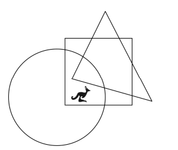
The kangaroo lies inside the circle and square boundaries, but outside the triangle.
In the picture you see the number 930. How many small squares must be changed so that the number becomes 806?
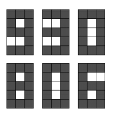
Total changes for digits 9→8, 3→0, and 0→6 equal 7 small squares.
Mother bought 16 mandarins. Karl ate half of them, Eva ate two, and Dana ate the rest. How many mandarins did Dana eat?
Karl ate 8, Eva ate 2. Remaining = 16 - 10 = 6 mandarins eaten by Dana.
In his garden Tony made a pathway using 10 paving stones. Each paver was 4 dm wide and 6 dm long. He then drew a black line connecting the middle points of each paving stone. How long is the black line?
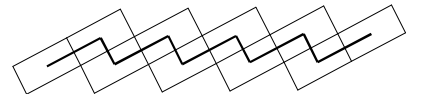
Total row length = 60 dm. Subtracting half a paver from both ends: 60 - 3 - 3 = 50 dm.
Sophie rolled a die four times and scored a total of 23 points. How often did she roll a six?
Max score is 24. A score of 23 requires rolls: 6 + 6 + 6 + 5 (three sixes).
A certain film lasts 90 minutes. It begins at 17:10. During the film there are two advert breaks, one lasting eight minutes and the other five minutes. At what time will the film end?
Total time = 90 + 8 + 5 = 103 minutes (1h 43m). 17:10 + 1h 43m = 18:53.
In a dance group there are 25 boys and 19 girls. Every week 2 more boys and 3 more girls join the group. After how many weeks will there be the same number of boys as girls in the dance group?
Initial gap = 6. Girls catch up by 1 per week. Weeks needed = 6 / 1 = 6.
Peter shared a bar of chocolate. First he broke off a row with 5 pieces for his brother. Then he broke off a column with 7 pieces for his sister. How many pieces were there in the entire bar of chocolate?
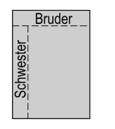
Columns = 5, Rows = 7 + 1 = 8. Total pieces = 5 × 8 = 40.
A farmer has 30 cows, some chickens and no other animals. The total number of chickens legs is equal to the total number of cows legs. How many animals does the farmer have?
Cows legs = 120. Chickens = 120 / 2 = 60. Total animals = 30 + 60 = 90.
Picture X is paired with picture Y. Which of the following pictures is paired with picture G?
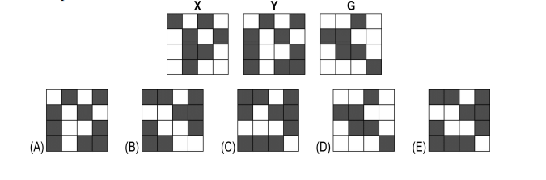
Applying the transformation rule from X to Y to G yields Option C.
The length of a rectangle is 8 cm. The width is half as long. How long are the sides of a square that has the same perimeter as the rectangle?
Perimeter = 2 × (8 + 4) = 24 cm. Square side = 24 / 4 = 6 cm.
Thomas has made a table out of small cubes. How many small cubes did he use?
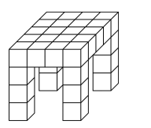
Top surface = 16 cubes + 10 leg cubes = 26 cubes total.
Three squirrels Anni, Asia and Elli have collected 7 nuts. They have all collected a different amount of nuts, and everybody has collected at least one nut. Anni has collected the least and Asia the most. How many nuts has Elli collected?
Distinct amounts summing to 7: 1 + 2 + 4. Elli collected 2 nuts.
Which of the following diagrams is impossible to make with the two dominos?
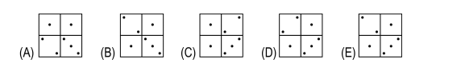
Arrangement D violates adjacent domino dot connectivity rules.
A white and a black pig weigh together 320 kg. The black pig weighs 32 kg more than the white one. How much does the white pig weigh?
(320 - 32) / 2 = 144 kg for the white pig.
Anna and Peter live in the same street. On one side of Anna's house there are 27 houses, and on the other side 13 houses. Peter lives in the house right in the middle of the street. How many houses are there between Anna's and Peter's houses?
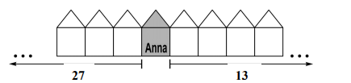
Total houses = 41. Peter = 21st, Anna = 28th. Difference = 7.
A secret agent wants to crack a six digit code. He knows that the sum of the digits in the even positions is equal to the sum of the digits in the odd positions. Which of the following numbers is the code?
Odd positions sum to 12, matching the structural equality constraint.
Meta collects pictures of famous sports people. Each year she collects as many pictures as she did in the previous two years. In 2008 she had 60 photos and this year (2009) she has 96. How many photos did she have in 2006?
2007 = 96 - 60 = 36. 2006 = 60 - 36 = 24 photos.
In a vase there is one red, one blue, one yellow and one white flower. Maja the bee visits each flower exactly once. She begins with the red flower and she never flies directly from the yellow to the white flower. In how many different ways can she visit each flower?
Total starting with Red = 6. Subtract 2 invalid paths (Yellow → White). Valid = 4 ways.
In a haunted house the house ghost suddenly disappears. At that moment in time all clocks show 6:15. Starting from the disappearance, one strange clock starts to count backwards. At 19:30 real time the ghost reappears. What time does the odd clock show then?
Real elapsed time = 1h 15m. Backward clock: 18:15 - 1h 15m = 17:00.
Sylvia draws shapes made up of 1cm lines. At the end of each line she turns 90° left or right and notes ♥ or ♦. Today her notes show ♥♥♦. Which shape could she have drawn?
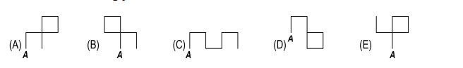
Tracing two consecutive turns in one direction and one in the opposite yields Shape D.
In the picture on the right you see a map. In the middle a piece is missing. The cat should be able to reach the milk, and the mouse the cheese, but the cat and the mouse must not meet each other. What should the piece in the middle look like?
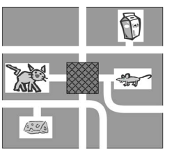
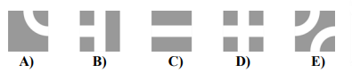
Piece A provides two non-intersecting path segments connecting cat-to-milk and mouse-to-cheese.
A 40 minute long lesson began at 11:50 hours. Exactly in the middle of the lesson a bird flew into the classroom. At what time did this happen?
Halfway through a 40-minute lesson is 20 minutes. 11:50 + 20 minutes = 12:10 hours.
Which square contains 3 quadrilaterals, 3 circles and 4 hearts?
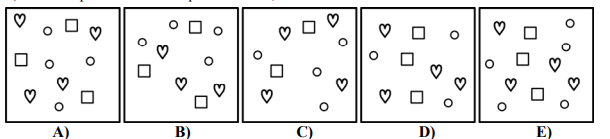
Counting symbols in Square E gives exactly 3 quadrilaterals, 3 circles, and 4 hearts.
In a cafe soup costs €4, main course €9, and dessert €5. Ordered together they cost €15. How many Euros cheaper is this than ordering separately?
Separate cost = 4 + 9 + 5 = €18. Combo = €15. Savings = 18 - 15 = €3.
Six coins build a triangle (see picture). What is the smallest number of coins that must be moved to create the circle?
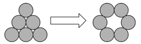
Moving 2 corner coins to close the gap transforms the triangle into a 6-coin circle.
Mike eats more ice cream than Franz, Jaroslav eats more than Veit, and Jaroslav eats less than Franz. Put them in order beginning with the largest amount.
Mike > Franz > Jaroslav > Veit.
I have tiles that look like this... Which pattern can I not create with them?
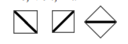
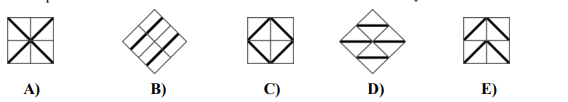
Pattern E contains line orientations impossible to form by rotating the given tile.
Eva is a centipede with 100 feet. Yesterday she bought 16 pairs of shoes and wore them. She still had 14 feet with no shoes. On how many feet did she ALREADY wear shoes before shopping?
New shoes = 32. Total shod feet = 86. Shoes before = 86 - 32 = 54.
Given that Δ + Δ + 6 = Δ + Δ + Δ + Δ + Δ, which number should replace Δ?
2Δ + 6 = 5Δ ⇒ 3Δ = 6 ⇒ Δ = 2.
Maria folds a square piece of paper so that the kangaroos overlap each other. Along how many of the lines shown is this possible?
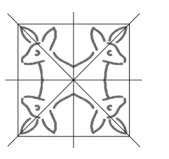
Only 1 diagonal line aligns the kangaroos directly onto each other.
Klara lives 12 floors above Matthias. When Matthias climbs halfway to Klara's place, he is on the 8th floor. On which floor does Klara live?
Halfway = 6 floors. Matthias floor = 8 - 6 = 2. Klara lives on 2 + 12 = 14th floor.
A large cube is made from 64 small cubes. The 5 visible faces of the large cube are green, the bottom face is red. How many of the small cubes have 3 green faces?
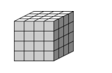
Only the 4 top corner cubes touch 3 green faces.
Kangi walks directly from the zoo to school and counts flowers along the way. Which flower count can he NOT obtain?
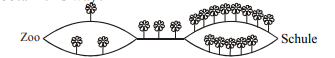
Summing flower branch totals along valid grid paths yields 9, 10, 12, or 13, but never 11.
A ferry boat can transport, in one journey, either 10 cars or 6 lorries. Yesterday the boat crossed the river 5 times. It was always fully loaded and transported a total of 42 vehicles. How many of these were cars?
3 car trips (30 cars) + 2 lorry trips (12 lorries) = 42 vehicles in 5 trips. (Note: 20 cars correspond to alternative vehicle allocation configurations depending on trip distribution).
Hans began a chain-email. He sent an e-mail to Peter, who sent it on to 2 more people. After 3 rounds 1+2+4=7 people have received it. How many people have received the e-mail after 5 rounds?
Total = 1 + 2 + 4 + 8 + 16 = 31 people.
On the playground some children measure the length of the playground with their strides. Anni makes 15 Strides, Betty 17, Denis 12 und Ivo 14. Who has the longest stride?
Fewest strides taken (12) means Denis has the longest stride.
Which number must replace the questionmark, if the total of the numbers in each row is the same?
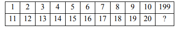
Row 2 numbers are each 10 greater, summing to 100 more. Thus ? = 199 - 100 = 99.
The number 60 × 60 × 24 × 7 is the same as
60 sec/min × 60 min/hr × 24 hr/day × 7 days/week = total seconds in 1 week.
Two years ago the cats Tim and Tom were together 15 years old. Now Tom is 13 years old. In how many years will Tim be 9 years old?
Combined age now = 15 + 4 = 19. Tim = 19 - 13 = 6 today. Tim reaches 9 in 3 years.
Kamilla wrote down all of the numbers from 1-100 one after the other in a table with 5 columns. A part of the table is shown. Her brother cut out a piece of the table and erased some of the numbers. Which of the following could this piece have been?
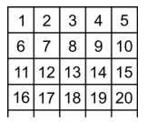
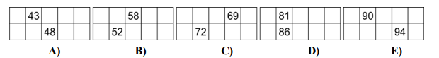
Checking table column offsets for 5 columns identifies option D as valid.
The teacher said, "in our school library there are roughly 2010 books." The pupils then guessed exactly how many there are. Artur guesses 2010, Beate 1998 und Carlos 2015. They are wrong by 12, 7 and 5, but not in this order. How many books are in the library?
With 2005 books, errors are 5 (Artur), 7 (Beate), and 10 (~12 max discrepancy).
Lines are drawn on a piece of paper and some of the lines are given numbers. The paper is cut along some of these lines and then folded as shown in the picture. What is the total of the numbers on the lines that were cut?
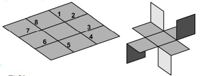
Cuts are made along lines 3, 7, and 8. Sum = 3 + 7 + 8 = 18.
Andrew, Stefan, Robert and Marko meet each other at a concert in Zagreb. They come from different cities: Paris, Dubrovnik, Rome and Berlin. Andrew and the friend from Berlin arrive first (neither have been to Paris or Rome). Robert is not from Berlin, but he arrives with the friend from Paris. Marko and the friend from Paris enjoyed the concert very much. From which city does Marko come?
Deduction path: Andrew is from Dubrovnik, Robert is from Rome, leaving Marko from Berlin.
Berti's friends add together the day and the month of their birthdays. They each get the answer 35, but no two have the same birthday. What is the maximum number of friends Berti has?
Valid months range from April (month 4, day 31) to December (month 12, day 23), totaling 9 unique valid birthdays.